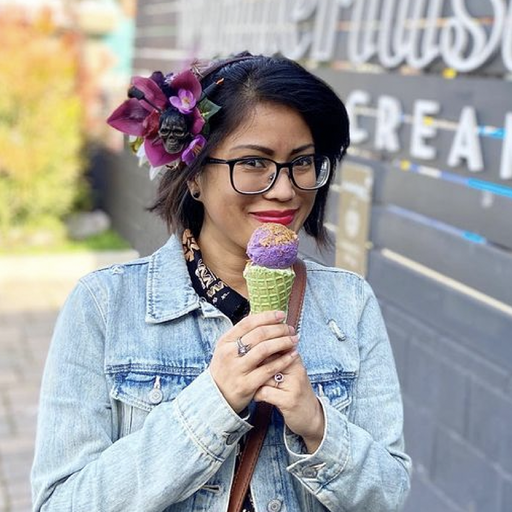
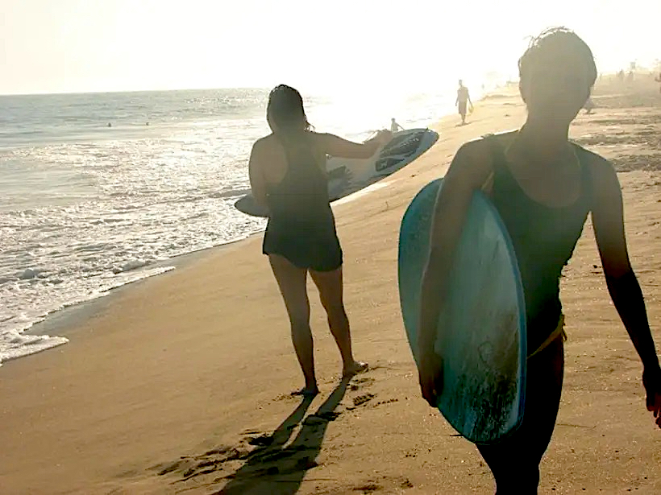
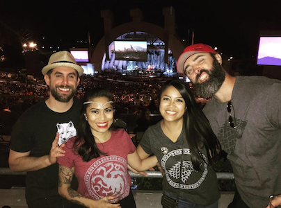

|  | I love going on dessert adventures, especially for ice cream and boba tea. Some of my favorite places are Salt & Straw, Jeni's Splended Ice Cream, Wanderlust Creamery (this photo), 85* Bakery Cafe, Ding Tea, and Mr. Chi. I also love baking cookies. |
|  | If I'm not tired, I love being outside in nature, just hearing the sounds of the trees and the ocean, playing sports, and doing yoga. |
|  | Live music is my favorite, especially rock, indie, and soundtracks. In this photo, my husband, sister, bro-in-law, and I were at the Hollywood Bowl for the Game of Thrones Live Concert Experience, which was amazing. Besides GOT, I also love watching Marvel, Star Wars, and other Disney things. |
| My sisters and I opened a photography, videography, and post-production company in 2009, which is still going strong. We mostly cover weddings and events, but also have cinematic, print, and travel experience. - mcjimpressions.com | |
| Currently, I work for The Walt Disney Company, handling online guest services for the Disneyland Resort in California and Aulani, a Disney Resort & Spa in Hawaii. Working for a company I have loved my entire life is a dream come true. | |
| Before Disney and my newfound love for tech, music was my passion, and I worked for KROQ, a local rock station, in the promotions and events department for a few years, after graduating with my first degree in Communications. |